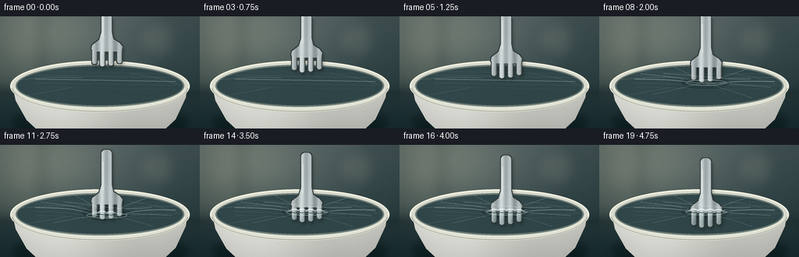
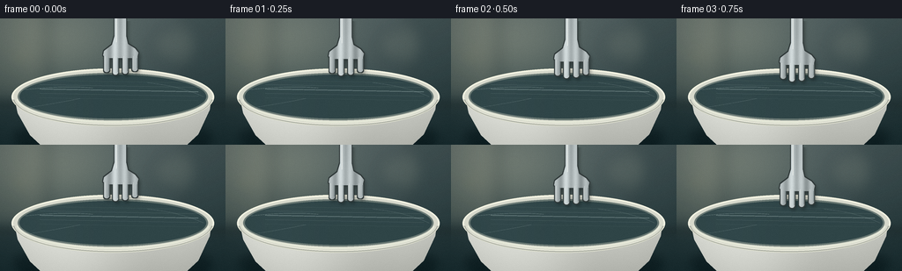

CODING AGENTS AS PIXEL WORLD MODELS
traex/GPT-5.6-Sol · phygen_023
点击播放 · 原生 RGB 像素
逐轮保存的候选
回放视频、检查图与代码变化。
每份候选均可单独播放。实际图片检查记录在下方工具轨迹中。
候选 01播放与检查图
点击播放 · 原生 RGB 像素

展开代码变化
--- 上一保存版本
+++ 本次保存版本
@@ -0,0 +1,336 @@
+from pathlib import Path
+import math
+
+import numpy as np
+from PIL import Image, ImageDraw, ImageFilter
+
+import artifact_io
+
+
+W, H, N = 256, 144, 20
+S = 4 # supersampling for clean macro edges
+WS, HS = W * S, H * S
+ROOT = Path(__file__).resolve().parent
+
+
+def box(v):
+ return tuple(int(round(q * S)) for q in v)
+
+
+def pts(v):
+ return [(int(round(x * S)), int(round(y * S))) for x, y in v]
+
+
+def smoothstep(x):
+ x = max(0.0, min(1.0, x))
+ return x * x * (3.0 - 2.0 * x)
+
+
+def curved_line(draw, controls, fill, width=1.0, samples=60):
+ """Draw a quadratic or cubic Bezier in logical pixel coordinates."""
+ p = np.asarray(controls, dtype=float)
+ t = np.linspace(0.0, 1.0, samples)
+ if len(p) == 3:
+ q = ((1-t)[:, None] ** 2 * p[0] +
+ 2 * ((1-t)*t)[:, None] * p[1] + t[:, None] ** 2 * p[2])
+ else:
+ q = ((1-t)[:, None] ** 3 * p[0] +
+ 3 * (((1-t) ** 2)*t)[:, None] * p[1] +
+ 3 * ((1-t)*(t ** 2))[:, None] * p[2] + t[:, None] ** 3 * p[3])
+ draw.line(pts(q), fill=fill, width=max(1, int(width*S)), joint="curve")
+
+
+def static_scene():
+ yy, xx = np.mgrid[0:HS, 0:WS]
+ x = xx / S
+ y = yy / S
+
+ # Muted kitchen background and slate worktop. Broad radial light gives a
+ # photographic, shallow-depth-of-field appearance without external assets.
+ top = np.array([83., 98., 99.])
+ bottom = np.array([31., 51., 54.])
+ mix = np.clip(y / H, 0, 1)[..., None]
+ arr = top * (1-mix) + bottom * mix
+ glow = np.exp(-(((x-66)/76)**2 + ((y-28)/54)**2))[..., None]
+ arr += glow * np.array([39., 34., 25.])
+ vignette = ((x-W/2)/(W*.72))**2 + ((y-H/2)/(H*.78))**2
+ arr -= np.clip(vignette, 0, 1)[..., None] * 17
+ arr = np.uint8(np.clip(arr, 0, 255))
+ base = Image.fromarray(arr, "RGB").convert("RGBA")
+
+ # Soft, deliberately defocused kitchen forms.
+ soft = Image.new("RGBA", (WS, HS), (0, 0, 0, 0))
+ d = ImageDraw.Draw(soft)
+ d.rounded_rectangle(box((-18, -20, 48, 93)), radius=12*S,
+ fill=(194, 185, 153, 30))
+ d.rectangle(box((51, -10, 55, 94)), fill=(19, 37, 39, 65))
+ d.rectangle(box((205, -8, 259, 97)), fill=(22, 41, 43, 48))
+ d.ellipse(box((173, 10, 215, 51)), fill=(210, 205, 170, 21))
+ d.ellipse(box((17, 34, 32, 49)), fill=(244, 214, 151, 35))
+ soft = soft.filter(ImageFilter.GaussianBlur(8*S))
+ base = Image.alpha_composite(base, soft)
+
+ # Counter seam and a faint fork/bowl cast shadow.
+ counter = Image.new("RGBA", (WS, HS), (0, 0, 0, 0))
+ d = ImageDraw.Draw(counter)
+ d.rectangle(box((0, 98, W, H)), fill=(28, 45, 48, 115))
+ d.line(pts([(0, 99), (256, 98)]), fill=(130, 145, 139, 28), width=S)
+ d.ellipse(box((15, 113, 242, 157)), fill=(2, 13, 16, 105))
+ counter = counter.filter(ImageFilter.GaussianBlur(5*S))
+ base = Image.alpha_composite(base, counter)
+
+ # Bowl body, modeled with a mask and smooth ceramic shading.
+ body_mask = Image.new("L", (WS, HS), 0)
+ md = ImageDraw.Draw(body_mask)
+ body_poly = [(16, 89), (20, 108), (34, 133), (49, 147),
+ (209, 147), (225, 132), (238, 104), (240, 89)]
+ md.polygon(pts(body_poly), fill=255)
+ by, bx = np.mgrid[0:HS, 0:WS]
+ lx, ly = bx/S, by/S
+ ceramic = np.zeros((HS, WS, 4), dtype=np.uint8)
+ shade = 188 + 35*np.exp(-((lx-75)/82)**2) - 0.55*np.maximum(ly-91, 0)
+ shade += 7*np.exp(-((lx-205)/34)**2)
+ ceramic[..., 0] = np.clip(shade+8, 0, 255)
+ ceramic[..., 1] = np.clip(shade+10, 0, 255)
+ ceramic[..., 2] = np.clip(shade+3, 0, 255)
+ ceramic[..., 3] = np.asarray(body_mask)
+ base = Image.alpha_composite(base, Image.fromarray(ceramic, "RGBA"))
+
+ # Outer lip and dark opening.
+ rim = Image.new("RGBA", (WS, HS), (0, 0, 0, 0))
+ d = ImageDraw.Draw(rim)
+ d.ellipse(box((13, 57, 243, 122)), fill=(215, 217, 204, 255),
+ outline=(241, 241, 226, 255), width=2*S)
+ d.ellipse(box((20, 62, 236, 116)), fill=(32, 53, 56, 255),
+ outline=(105, 117, 111, 255), width=2*S)
+ base = Image.alpha_composite(base, rim)
+
+ # Transparent wrap over the opening: subtle tint, reflected window bands,
+ # and texture are clipped to the interior ellipse.
+ film_mask = Image.new("L", (WS, HS), 0)
+ ImageDraw.Draw(film_mask).ellipse(box((20, 62, 236, 116)), fill=255)
+ film = np.zeros((HS, WS, 4), dtype=np.uint8)
+ sheen = (8 + 12*np.exp(-((ly-77-.045*(lx-128))/8)**2)
+ + 13*np.exp(-((lx-64)/38)**2))
+ film[..., 0] = np.clip(98 + sheen, 0, 255)
+ film[..., 1] = np.clip(123 + sheen, 0, 255)
+ film[..., 2] = np.clip(124 + sheen, 0, 255)
+ film[..., 3] = (np.asarray(film_mask).astype(float) * .20).astype(np.uint8)
+ base = Image.alpha_composite(base, Image.fromarray(film, "RGBA"))
+
+ # Back and front rim glints establish the bowl's oblique perspective.
+ details = Image.new("RGBA", (WS, HS), (0, 0, 0, 0))
+ d = ImageDraw.Draw(details)
+ d.arc(box((14, 57, 242, 121)), 185, 350, fill=(251, 249, 228, 175), width=S)
+ d.arc(box((14, 58, 242, 123)), 4, 176, fill=(91, 99, 95, 130), width=2*S)
+ d.arc(box((18, 61, 238, 119)), 6, 175, fill=(236, 239, 222, 185), width=2*S)
+ # A few static tension lines near the perimeter.
+ curved_line(d, [(28, 81), (72, 76), (105, 79)], (220, 238, 234, 70), .55)
+ curved_line(d, [(167, 73), (205, 77), (231, 89)], (226, 241, 237, 55), .55)
+ curved_line(d, [(35, 101), (72, 95), (91, 91)], (223, 240, 237, 48), .5)
+ base = Image.alpha_composite(base, details)
+ return base
+
+
+BASE = static_scene()
+
+
+def fork_shift(frame):
+ u = frame / (N-1)
+ if u < .35:
+ return 18.0 * smoothstep(u/.35)
+ if u < .66:
+ return 18.0 + 16.0 * smoothstep((u-.35)/.31)
+ return 34.0 + 8.0 * smoothstep((u-.66)/.34)
+
+
+def make_fork_mask(shift):
+ mask = Image.new("L", (WS, HS), 0)
+ d = ImageDraw.Draw(mask)
+ # The slight widening and asymmetric tine lengths make this read as a fork,
+ # rather than a comb. The handle continues beyond the top crop.
+ d.rounded_rectangle(box((130, -25+shift, 143, 29+shift)), radius=5*S, fill=255)
+ d.polygon(pts([(130, 20+shift), (143, 20+shift), (145, 29+shift),
+ (153, 34+shift), (157, 39+shift), (156, 43+shift),
+ (151, 45+shift), (122, 45+shift), (117, 42+shift),
+ (118, 37+shift), (127, 30+shift)]), fill=255)
+ tine_specs = [(118, 124, 61), (128, 134, 64),
+ (139, 145, 63), (150, 156, 60)]
+ for x0, x1, tip in tine_specs:
+ # Narrow, gently rounded stainless-steel tines.
+ d.rounded_rectangle(box((x0, 39+shift, x1, tip+shift)),
+ radius=2.7*S, fill=255)
+ return mask
+
+
+def draw_fork(frame, shift, hole_progress):
+ mask = make_fork_mask(shift)
+ # soft contact shadow
+ sh = Image.new("RGBA", (WS, HS), (0, 0, 0, 0))
+ shadow_mask = mask.filter(ImageFilter.GaussianBlur(2.2*S))
+ shadow_offset = Image.new("L", (WS, HS), 0)
+ shadow_offset.paste(shadow_mask, (2*S, 3*S))
+ sh.putalpha(shadow_offset.point(lambda v: int(v*.37)))
+
+ # dark steel border, followed by a multi-band reflective steel fill
+ edge_mask = mask.filter(ImageFilter.MaxFilter(2*S+1))
+ edge = Image.new("RGBA", (WS, HS), (49, 58, 58, 255))
+ edge.putalpha(edge_mask)
+
+ yy, xx = np.mgrid[0:HS, 0:WS]
+ x = xx/S
+ y = yy/S
+ wave = 22*np.sin((x-116)*.55) + 31*np.exp(-((x-133)/9)**2)
+ vert = 8*np.exp(-((y-(34+shift))/23)**2)
+ steel = np.zeros((HS, WS, 4), dtype=np.uint8)
+ steel[..., 0] = np.clip(152+wave+vert, 55, 230)
+ steel[..., 1] = np.clip(161+wave+vert, 60, 237)
+ steel[..., 2] = np.clip(162+wave+vert, 62, 239)
+ steel[..., 3] = np.asarray(mask)
+ metal = Image.fromarray(steel, "RGBA")
+
+ # The metal seen through intact film below the plane is cooler and duller.
+ tint = Image.new("RGBA", (WS, HS), (24, 69, 72, 0))
+ tint_alpha = np.asarray(mask).copy()
+ fade = np.clip((np.arange(HS)[:, None]/S - 81)/18, 0, 1)
+ tint_alpha = (tint_alpha * fade * .25).astype(np.uint8)
+ # Punctured holes expose most of each tine again; the collar is drawn later.
+ tint.putalpha(Image.fromarray(tint_alpha, "L"))
+
+ highlight = Image.new("RGBA", (WS, HS), (0, 0, 0, 0))
+ hd = ImageDraw.Draw(highlight)
+ hd.line(pts([(132, -10+shift), (132, 27+shift)]),
+ fill=(248, 251, 246, 145), width=S)
+ for x0, x1, tip in [(118,124,61),(128,134,64),(139,145,63),(150,156,60)]:
+ hd.line(pts([(x0+1.3, 43+shift), (x0+1.3, tip-2+shift)]),
+ fill=(245, 250, 244, 130), width=max(1, S//2))
+ hd.line(pts([(x1-.7, 45+shift), (x1-.7, tip-3+shift)]),
+ fill=(44, 65, 67, 120), width=max(1, S//2))
+ return sh, edge, metal, tint, highlight
+
+
+def render_frame(frame):
+ im = BASE.copy()
+ shift = fork_shift(frame)
+ longest_tip = 64 + shift
+ compression = max(0.0, longest_tip - 80.0)
+
+ # Staggered failure: center tines puncture first, then the outer tines.
+ thresholds = [14.1, 11.2, 12.4, 15.8]
+ hole_progress = [smoothstep((compression-th)/4.0) for th in thresholds]
+ mean_hole = sum(hole_progress) / 4.0
+ membrane_depth = min(compression, 15.0) * (1-.62*mean_hole)
+ contact_alpha = smoothstep(compression/4.0)
+
+ # Contact shadow and eventual dark slit interiors are below the steel.
+ pre = Image.new("RGBA", (WS, HS), (0, 0, 0, 0))
+ pd = ImageDraw.Draw(pre)
+ if compression > 0:
+ pd.ellipse(box((105, 77+membrane_depth*.18, 167, 91+membrane_depth*.55)),
+ fill=(2, 17, 20, int(22+34*contact_alpha)))
+ tine_x = [121, 131, 142, 153]
+ hole_y = []
+ for x0, hp in zip(tine_x, hole_progress):
+ local_base = 81.5 + .018*(x0-137)
+ hy = local_base + membrane_depth * (.72-.18*hp)
+ hole_y.append(hy)
+ if hp > .01:
+ # Narrow dark slit at the opening; the steel will pass in front of it.
+ pd.ellipse(box((x0-4.2*hp, hy-2.1, x0+4.2*hp, hy+2.5)),
+ fill=(3, 18, 20, int(80+115*hp)))
+ pre = pre.filter(ImageFilter.GaussianBlur(.38*S))
+ im = Image.alpha_composite(im, pre)
+
+ sh, edge, metal, tint, highlights = draw_fork(frame, shift, hole_progress)
+ im = Image.alpha_composite(im, sh)
+ im = Image.alpha_composite(im, edge)
+ im = Image.alpha_composite(im, metal)
+ im = Image.alpha_composite(im, tint)
+ im = Image.alpha_composite(im, highlights)
+
+ # Animated membrane contours, creases, and puncture collars are in front of
+ # the metal. This layer is the crucial cue that the tines press through a
+ # thin, transparent material rather than simply descending into a bowl.
+ film = Image.new("RGBA", (WS, HS), (0, 0, 0, 0))
+ d = ImageDraw.Draw(film)
+ center_x = 137.0
+ # Four projected grid lines deform smoothly into a basin around the tips.
+ for j, (offset, alpha) in enumerate([(-9,40), (-4,72), (1,118), (6,64), (11,34)]):
+ xs = np.linspace(45, 225, 160)
+ spread = 31 + abs(offset)*1.1
+ disp = membrane_depth * math.exp(-(offset/10.5)**2)
+ ys = 81.0 + offset + .018*(xs-center_x) + disp*np.exp(-((xs-center_x)/spread)**2)
+ d.line(pts(list(zip(xs, ys))), fill=(222, 242, 239, int(alpha*(.72+.28*contact_alpha))),
+ width=max(1, int((.48 + (j==2)*.30)*S)))
+
+ if compression > .3:
+ cy = 81.5 + membrane_depth*.86
+ strength = int(25 + 90*contact_alpha)
+ # Tension rays and small highlights converging toward the dimple.
+ rays = [((52,73),(99,78)), ((68,100),(105,92)), ((96,65),(116,75)),
+ ((188,68),(166,76)), ((220,91),(174,87)), ((196,105),(169,95))]
+ for idx, (a, b) in enumerate(rays):
+ target = (center_x + (-5 if idx%2 else 4), cy)
+ curved_line(d, [a, b, target],
+ (230, 246, 242, max(16, strength-(idx%3)*17)), .55)
+ d.ellipse(box((111, cy-3.7, 163, cy+3.8)),
+ outline=(233, 249, 245, int(40+64*contact_alpha)), width=S)
+
+ # Torn collars, bright folded edges, and short radial splits.
+ for i, (x0, hp, hy) in enumerate(zip(tine_x, hole_progress, hole_y)):
+ if hp <= .01:
+ continue
+ rx = 3.2 + 2.0*hp
+ d.arc(box((x0-rx, hy-2.4, x0+rx, hy+2.5)), 166, 356,
+ fill=(246, 255, 250, int(90+145*hp)), width=max(1, S))
+ d.arc(box((x0-rx, hy-2.0, x0+rx, hy+2.9)), 4, 165,
+ fill=(21, 45, 47, int(65+90*hp)), width=max(1, S))
+ # Jagged tears lengthen progressively as penetration continues.
+ split = 2.0 + 5.0*hp
+ for angle in (-168, -25, 18, 158):
+ if (i + angle) % 3 == 0 and hp < .42:
+ continue
+ a = math.radians(angle)
+ x1 = x0 + math.cos(a)*(rx-1)
+ y1 = hy + math.sin(a)*1.8
+ x2 = x0 + math.cos(a)*(rx+split)
+ y2 = hy + math.sin(a)*(2.0+split*.36)
+ d.line(pts([(x1,y1),(x2,y2)]), fill=(231,248,244,int(65+120*hp)),
+ width=max(1, S//2))
+ # Tiny puckered triangular flap on alternating sides.
+ side = -1 if i % 2 == 0 else 1
+ d.polygon(pts([(x0+side*rx, hy),
+ (x0+side*(rx+3.2*hp), hy-2.2*hp),
+ (x0+side*(rx+1.1), hy+1.5)]),
+ fill=(213, 236, 232, int(35+90*hp)))
+
+ # Broad moving reflection over the stretched film.
+ if compression > 0:
+ curved_line(d, [(82, 73), (119, 73+membrane_depth*.40),
+ (156, 79+membrane_depth*.58), (194, 80)],
+ (255,255,248,int(18+35*contact_alpha)), 1.0)
+ im = Image.alpha_composite(im, film)
+
+ # Front rim glint stays optically in front at the lowest edge.
+ front = Image.new("RGBA", (WS, HS), (0,0,0,0))
+ fd = ImageDraw.Draw(front)
+ fd.arc(box((14,58,242,123)), 5, 175, fill=(246,246,226,180), width=S)
+ im = Image.alpha_composite(im, front)
+
+ # Downsample and add restrained, deterministic sensor grain.
+ out = im.convert("RGB").resize((W,H), Image.Resampling.LANCZOS)
+ arr = np.asarray(out).astype(np.int16)
+ rng = np.random.default_rng(90210 + frame)
+ noise = rng.normal(0, .65, arr.shape[:2])[:, :, None]
+ arr = np.clip(arr + noise, 0, 255).astype(np.uint8)
+ return arr
+
+
+def main():
+ frames = np.stack([render_frame(i) for i in range(N)], axis=0)
+ assert frames.shape == (20, 144, 256, 3) and frames.dtype == np.uint8
+ artifact_io.save(frames, ROOT)
+
+
+if __name__ == "__main__":
+ main()
候选 02播放与检查图
点击播放 · 原生 RGB 像素

展开代码变化
--- 上一保存版本
+++ 本次保存版本
@@ -56,7 +56,7 @@
vignette = ((x-W/2)/(W*.72))**2 + ((y-H/2)/(H*.78))**2
arr -= np.clip(vignette, 0, 1)[..., None] * 17
arr = np.uint8(np.clip(arr, 0, 255))
- base = Image.fromarray(arr, "RGB").convert("RGBA")
+ base = Image.fromarray(arr).convert("RGBA")
# Soft, deliberately defocused kitchen forms.
soft = Image.new("RGBA", (WS, HS), (0, 0, 0, 0))
@@ -94,7 +94,7 @@
ceramic[..., 1] = np.clip(shade+10, 0, 255)
ceramic[..., 2] = np.clip(shade+3, 0, 255)
ceramic[..., 3] = np.asarray(body_mask)
- base = Image.alpha_composite(base, Image.fromarray(ceramic, "RGBA"))
+ base = Image.alpha_composite(base, Image.fromarray(ceramic))
# Outer lip and dark opening.
rim = Image.new("RGBA", (WS, HS), (0, 0, 0, 0))
@@ -116,7 +116,7 @@
film[..., 1] = np.clip(123 + sheen, 0, 255)
film[..., 2] = np.clip(124 + sheen, 0, 255)
film[..., 3] = (np.asarray(film_mask).astype(float) * .20).astype(np.uint8)
- base = Image.alpha_composite(base, Image.fromarray(film, "RGBA"))
+ base = Image.alpha_composite(base, Image.fromarray(film))
# Back and front rim glints establish the bowl's oblique perspective.
details = Image.new("RGBA", (WS, HS), (0, 0, 0, 0))
@@ -187,7 +187,7 @@
steel[..., 1] = np.clip(161+wave+vert, 60, 237)
steel[..., 2] = np.clip(162+wave+vert, 62, 239)
steel[..., 3] = np.asarray(mask)
- metal = Image.fromarray(steel, "RGBA")
+ metal = Image.fromarray(steel)
# The metal seen through intact film below the plane is cooler and duller.
tint = Image.new("RGBA", (WS, HS), (24, 69, 72, 0))
@@ -195,7 +195,7 @@
fade = np.clip((np.arange(HS)[:, None]/S - 81)/18, 0, 1)
tint_alpha = (tint_alpha * fade * .25).astype(np.uint8)
# Punctured holes expose most of each tine again; the collar is drawn later.
- tint.putalpha(Image.fromarray(tint_alpha, "L"))
+ tint.putalpha(Image.fromarray(tint_alpha))
highlight = Image.new("RGBA", (WS, HS), (0, 0, 0, 0))
hd = ImageDraw.Draw(highlight)
可观测工具轨迹
实际执行的命令与返回图片。
命令 1exit 0
/bin/bash -lc "cat prompt.txt && printf '\\n--- GENERATION_RULES.md ---\\n' && cat GENERATION_RULES.md && printf '\\n--- task_spec.json ---\\n' && cat task_spec.json"
命令 2exit 0
/bin/bash -lc "find . -maxdepth 3 -type f -printf '%p\\n' | sort && printf '\\n--- tools ---\\n' && command -v ffmpeg || true && command -v blender || true && command -v python3 || true"
命令 3exit 0
/bin/bash -lc 'cat artifact_io.py'
命令 4exit 0
/bin/bash -lc "python3 - <<'PY' mods=['numpy','PIL','cv2','imageio','scipy'] for m in mods: try: x=__import__(m); print(m, getattr(x,'__version__','ok')) except Exception as e: print(m, 'NO', e) PY"
命令 5exit 0
/bin/bash -lc 'python3 generate.py'
命令 6exit 0
/bin/bash -lc 'ls -lh pixels.npz index.html inspection.png transition_check.png frames/00.png frames/19.png && python3 -m py_compile generate.py artifact_io.py'
命令 7exit 0
/bin/bash -lc "python3 - <<'PY'
import numpy as np
from PIL import Image
from pathlib import Path
z=np.load('pixels.npz')['pixels']
print('packed tensor',z.shape,z.dtype,'range',int(z.min()),int(z.max()))
imgs=[np.asarray(Image.open(f'frames/{i:02d}.png')) for i in range(20)]
a=np.stack(imgs)
print('rgb',a.shape,a.dtype,'range',a.min(),a.max())
print('mean luminance',np.round(a.mean((1,2,3)),2).tolist())
print('changed pixels',[(i,int(np.any(a[i]"'!=a[i-1],axis=2).sum()),round(float(np.abs(a[i].astype(float)-a[i-1]).mean()),2)) for i in range(1,20)])
# print fork movement and event values from generator
import generate
for i in range(20):
s=generate.fork_shift(i); c=max(0,64+s-80)
hp=[round(generate.smoothstep((c-th)/4),2) for th in [14.1,11.2,12.4,15.8]]
print(f'"'{i:02d} shift={s:4.1f} compression={c:4.1f} holes={hp}')
PY"命令 8exit 1
/bin/bash -lc 'sha256sum pixels.npz frames/00.png frames/19.png > .tmp/hashes.before && python3 generate.py >/tmp/regenerate.log 2>&1 && sha256sum pixels.npz frames/00.png frames/19.png > .tmp/hashes.after && diff -u .tmp/hashes.before .tmp/hashes.after && cat .tmp/hashes.after'
命令 9exit 0
/bin/bash -lc "git status --short 2>/dev/null || true; find frames -maxdepth 1 -name '*.png' | sort | wc -l"
命令 10exit 0
/bin/bash -lc 'sha256sum pixels.npz frames/00.png frames/19.png > .tmp/hashes.before && python3 generate.py > .tmp/regenerate.log 2>&1 && sha256sum pixels.npz frames/00.png frames/19.png > .tmp/hashes.after && diff -u .tmp/hashes.before .tmp/hashes.after && cat .tmp/hashes.after && test ! -s .tmp/regenerate.log && echo '"'clean regeneration: yes'"
保存候选 2 份；完成命令 10 次；可验证图片返回 0 张。原始 API 响应与完整日志保留在本地。